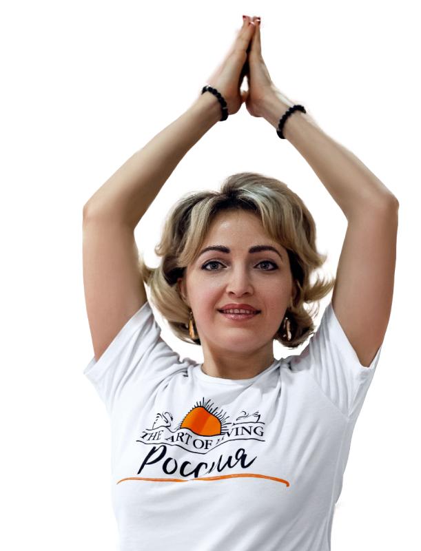

Надежда Кожанова
Тренер-практик по йоге с опытом более 8 лет.
logo
КАК С ПОМОЩЬЮ ЙОГИ ТЫ СПОСОБЕН ИЗМЕНИТЬ сВОЮ ЖИЗНЬ?
Бесплатный вебинар для всех, кому интересна йога
xx сентября
19:00
Надежда Кожанова
Тренер-практик по йоге с опытом более 8 лет.
Бесплатный вебинар для всех, кому интересна йога
xx сентября
19:00
Бонус
При регистрации
Подборка простых упражнений, которые ты сможешь использовать каждый день и чувствовать результат
Регистрируйся и проверь каждое из них!
Влияние регулярных практик на физическое здоровье
Очищение организма - при чем тут йога и как достичь результата
Психоэмоциональное состояние - точка гармонии в твоей жизни. Как к ней прийти?
И не терять это состояние на протяжении долгих лет
Развеем мифы и покажем на реальном примере, как должна работать настоящая практика
В чем связь между йогой и отношениями. Как вывести отношения на новый уровень с помощью практики Йоги.
Никогда не занимались йогой или только начинаете
Хотите почувствовать трансформацию в своем теле и характере
Сомневаетесь, подходит ли вам йога и будет ли этого достаточно для поддержания себя в форме
Хотите узнать, как снимать стресс, быть эффективным и здоровым человеком
Хотите вывести отношения со второй половинкой на новый уровень
Надежда Кожанова
Инструктор по йоге и практикующий специалист уже более 8 лет
Семейный психолог
Нутрициолог
Обучила йоге более 500 новичков, 95% из которых не перестают заниматься йогой и по сей день
Автор онлайн-курса "Йога - источник молодости и гармонии", обучение на котором прошло уже более 150 человек!
Счастливая Мама 5 детей
Елена Гусарова
Я ходила на йогу к Надежде. Очень здорово. Особенно, мне понравилось, что после каждого упражнения она предлагает направить внимание внутрь себя, в свои ощущения и состояние. Это занимает несколько секунд, и невероятно ценно, как оказалось. Это учит прислушиваться к своему телу, прислушиваться к себе. И теперь, даже когда я занимаюсь просто дома, то после каждой асаны обязательно направляю внимание внутрь. И очень благодарна этому навыку, приобретенному на занятиях йоги у Надежды.
Наталья
Всем привет, моё имя Наталья и этот отзыв о работе Нади. Конечно назвать работой деятельность Надежды сложно. Этот процесс больше похож на волшебный ритуал, наполненный заботой, легкостью и невероятной энергией. Я пошла на курс для того, чтобы экологично снять напряжение после работы и стрессовых ситуаций. Трудно передать ощущения после занятий, мне кажется, это возможно только почувствовать. Бескрайнее чувство благодарности себе за такой подарок и конечно же Надежде, за её подход. Это не просто йога, это набор женской мудрости в одном флаконе. Всем кто попадет впервые, я по доброму завидую. Вас ждёт удивительное путешествие. Удачи!
Литвинова Татьяна
Несколько слов о моих занятиях йогой в группе Надежды Кожановой. И даже наверное не о занятиях, а больше выразить благодарность нашему тренеру - Наде🙂 Когда, я попала на занятие впервые удивило и порадовало отсутствие давления со стороны тренера, все асаны по своим силам и возможностям организма. Приятно работать в своем темпе, не гнаться за кем-то. Очень слышащий тренер и все инструкции Надежда дает на "понятном" языке⁹😀 , точно находит выражения для описания самих упражнений👍 Не знаю как остальной группе, но от меня ещё отдельное спасибо за манеру говорить - это как отдельный вид медитации🙃 спокойный, ровный и успокаивающий тон голоса, он не выдергивает тебя из состояния потока, а плавно вливается в него👍 очень-очень-очень мне подходит. Ну и самое главное - это конечно эффект от самой тренировки! Конечно, его сложно описать, он очень обширный и плавно меняющий твою жизнь и здоровье в лучшую сторону. Как описать что после какого-то количества тренировок, тело само по другому реагирует на стресс, физическую нагрузку и другие внешние факторы? Никак. Только попробовать! И удивится! Благодаря тренировкам у Нади, я стала немного сильнее, выносливее☺ Стала хорошо спать, и не от усталости,а от спокойствия(!!!) у меня перестало дергатся плечо и глаз😉, я по другому реагирую на стресс и, внимание,теперь я могу сделать с сыном все уроки (!!!) без нервов, крика и слез💪. Ну и конечно, занятия йогой с Надей во время беременности очень помогали. Это прям отдельная тема. Грамотные советы, правильная нагрузка, удобное время тренировок, хорошее расслабление после тренировки, самомассаж сделали этот период легким и приятным временем🙂 Спасибо тебе, моя хорошая,🫂Желаю тебе, чтобы побольше людей смогли оценить по достоинству огромную пользу твоего труда😘
С ухудшением экологии, появлением большего количества стресса и других негативных факторов, качество жизни значительно снизилось.
Статистика показывает, что люди , которые регулярно занимаются йогой, чувствуют себя лучше и значительно улучшают качество своей повседневной жизни.
В России уже более 2 миллионов человек занимаются йогой и практикуют медитации.
Знакомство с Йогой на вебинаре разделит твою жизнь на “до” и “после”
До встречи!